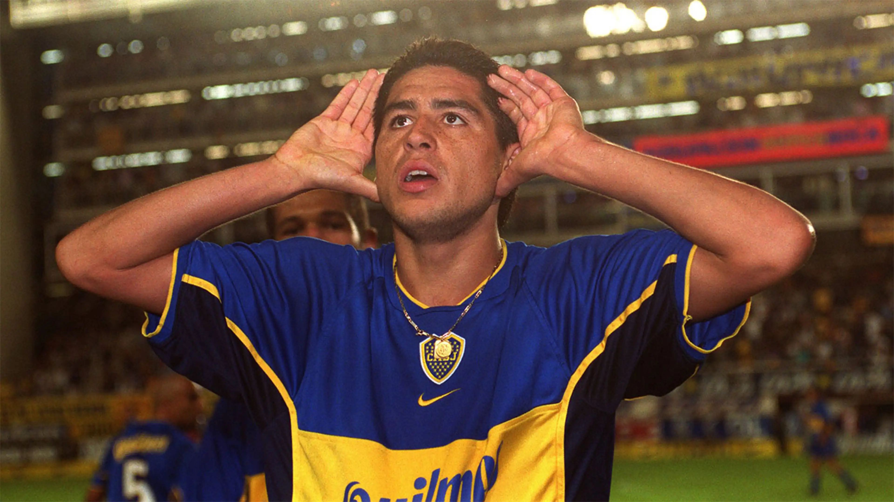

Club Atlético Boca Juniors es una entidad deportiva argentina, con sede en el barrio de La
Boca, BuenosAires.
Fue fundado el 3 de abril de 1905 por seis vecinos adolescentes hijos de italianos.
Comúnmente, La 12 es mencionada por los medios argentinos por sus actos de violencia, que involucran a otras barras bravas. nacionales o internacionales,y peleas internas entre las facciones que la componen.
También por sus arreglos al ingreso de los partidos y negocios que sus miembros tienen. Algunos informes la sitúan como una de las barras más violentas de Argentina.
Fue fundado el 3 de abril de 1905 por seis vecinos adolescentes hijos de italianos.
Comúnmente, La 12 es mencionada por los medios argentinos por sus actos de violencia, que involucran a otras barras bravas. nacionales o internacionales,y peleas internas entre las facciones que la componen.
También por sus arreglos al ingreso de los partidos y negocios que sus miembros tienen. Algunos informes la sitúan como una de las barras más violentas de Argentina.

Juan Román Riquelme (San Fernando, 24 de junio de 1978) es un exfutbolista y dirigente deportivo argentino,
y actual presidente del Club Atlético Boca Juniors.
Un emblema del «número 10 clásico», se destacó como uno de los mejores jugadores argentinos de todos los tiempos y más aclamados mediocampistas de su generación,
y uno de los últimos referentes de su posición.
Además, es ampliamente considerado como el mejor jugador de la historia de Boca Juniors y una de sus más importantes figuras, debido a su desempeño por 13 temporadas (1996-2014) en el club, en las que consiguió ganar tres Copas Libertadores de América y una Copa Intercontinental, entre otros títulos.
y actual presidente del Club Atlético Boca Juniors.
Un emblema del «número 10 clásico», se destacó como uno de los mejores jugadores argentinos de todos los tiempos y más aclamados mediocampistas de su generación,
y uno de los últimos referentes de su posición.
Además, es ampliamente considerado como el mejor jugador de la historia de Boca Juniors y una de sus más importantes figuras, debido a su desempeño por 13 temporadas (1996-2014) en el club, en las que consiguió ganar tres Copas Libertadores de América y una Copa Intercontinental, entre otros títulos.
